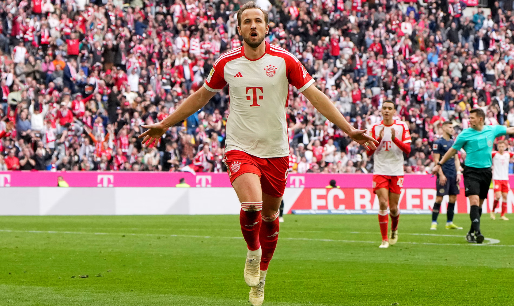
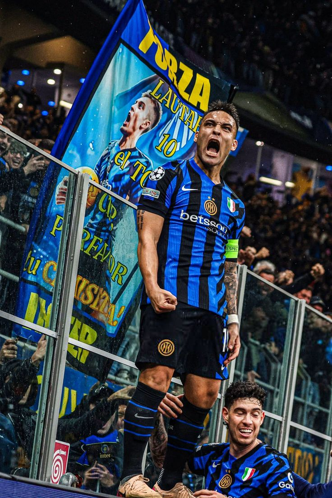
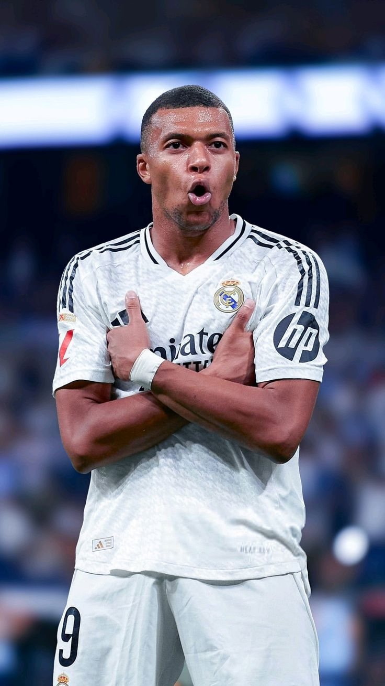
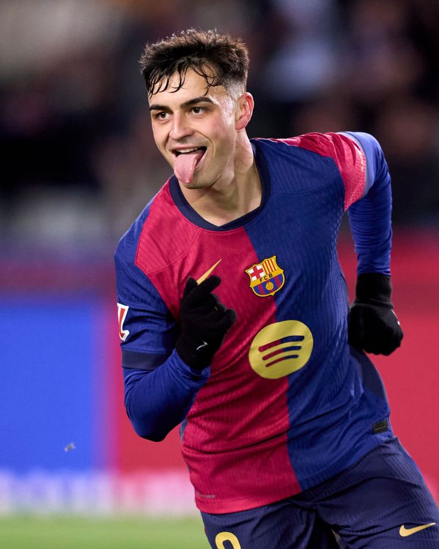
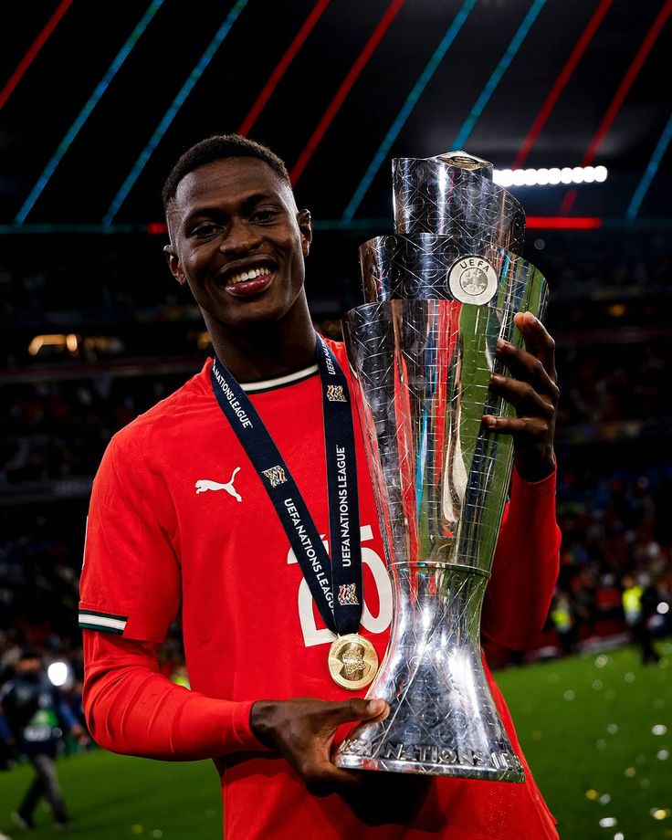
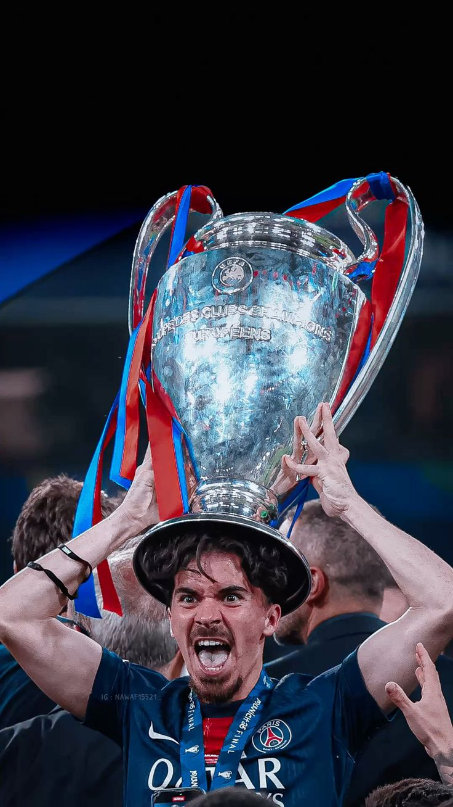
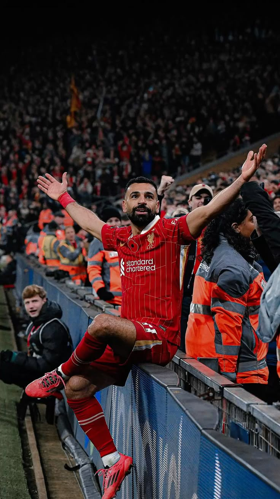
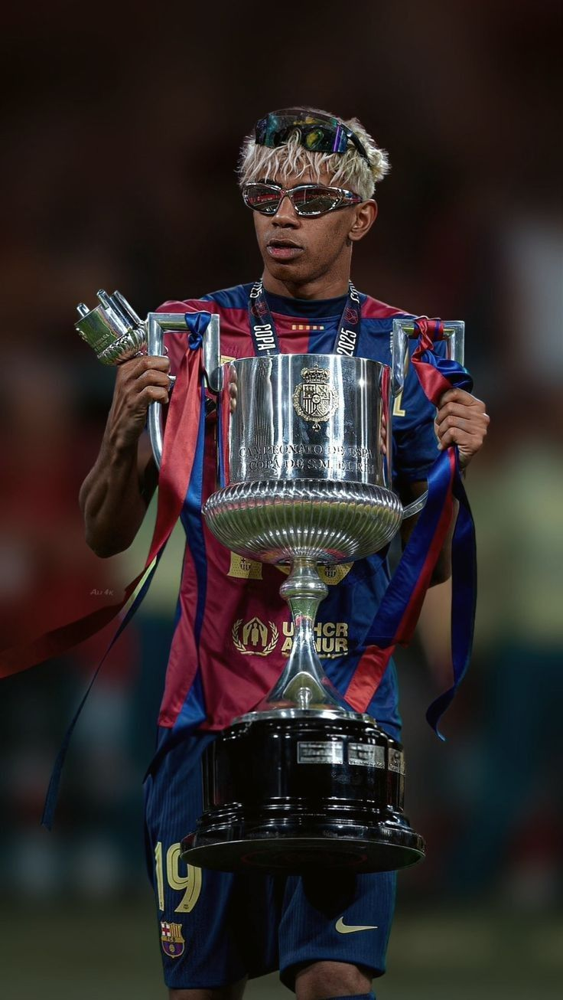
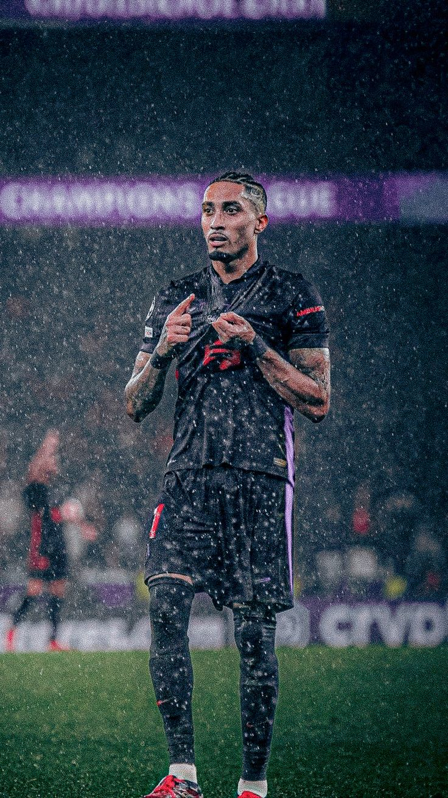
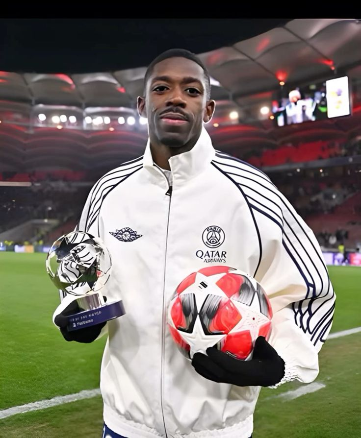

10 Stars, One Golden Dream
Ballon d’Or 2025 Power Rankings 10 → 1 (My opinion)

This season has been one hell of a roller coaster ride. From late comebacks to utter humiliation, we have seen all. All the players gave their best(except vini) but some stood above the rest. Today we are gonna discuss the top 10 players of this seaon
🔟 Harry Kane – The Consistent Cannon

Still delivering. Kane finished the season with a remarkable 38 goals
for Bayern Munich, making him the Bundesliga’s top scorer and also
helping him win the league. The English striker’s blend of leadership,
clinical finishing, and tactical savvy make him a fan favorite—even if
PSG’s dominance overshadowed him.
(Top‑10 contender thanks to relentless output and timeless
reliability.)
9️⃣ Lautaro Martínez – The Tango Titan

Inter Milan’s talisman again. Lautaro netted 22 goals across all competitions, leading Inter to a Serie A title and another deep Champions League run to the final(though they were destroyed by PSG). He’s fierce, fearless, and always delivers—yet still chasing that individual breakthrough.
8️⃣ Kylian Mbappé – Flash Reloaded

Mbappé’s move to Real Madrid sparked debate—but he still racked up 43+
goals across all competitions including a Champions League hat‑trick
vs Man City, won the European Golden Boot after a relatively slow
start to his life in Madrid . Despite team setbacks, his pace and
finishing kept him in the top‑10 mix.
(A reminder: consistency is sometimes its own reward.)
7️⃣ Pedri – The Spanish Maestro

Barcelona’s midfield metronome. Pedri was nearly ever-present—37 La
Liga games, with four goals and five assists, plus intricate passing
across Europe. After recent struggles with injury, with full fitness
he showed the whole world why he is considered the next Iniesta. He
offered calm, control, and creativity in crucial moments.
(Silent dominance at its finest.)
6️⃣ Nuno Mendes – The Full‑Back Phenomenon

PSG’s left flank wizard. With 9 assists, standout defensive stats, and
regular big‑match impact, Mendes balanced defense and attack like a
modern full‑back dream. Winning treble with PSG and Nations League
with Portugal and his performance in the final, literally pocketed
Lamine Yamal. He really performed really well this season. His rise in
the Ballon race is rare and impressive.
(Who said defenders don’t get noticed?)
5️⃣ Vitinha – The Tactical Brain

The engine of PSG’s midfield. With around 6 goals and 14 assists, plus
2,500+ passes at elite passing accuracy, Vitinha dictated games with
supreme control while steering Portugal to Nations League glory and
PSG to historic treble.
(Influence that goes beyond highlights.)
4️⃣ Mohamed Salah – The Anfield Pharaoh

Even at 33, Salah ruled. He led the Premier League in both goals (29) and assists (18), won the Golden Boot and Playmaker awards, and racked up a record-breaking 503 Dream Team points. His finishing and creativity remained elite all season. Broke countless records, and if it wasnt for Liverpool's early champions league exit, he would have been higher(or probably won).
3️⃣ Lamine Yamal – The Teenage Tornado

At just 17, Yamal was impossible to ignore. He was involved in 22 La Liga goals (goals + assists) in only 35 outings and was key in Barcelona's great season.Also, helped Spain reach Nation's League Final. He’s now on track to shatter every youth record at Barcelona.
2️⃣ Raphinha – The Revival Rocket

Barca’s redemption story. The definition of clutch player. He delivered 28 goals and 22 assists, lighting up La Liga and leading the Champions League in goal contributions and equalled Ronaldo's record. His impact in big games—El Clásico, semis—it doesn’t get bigger. If it wasn’t for that one mistake by Araujo, he would have been the frontrunner for the golden ball.
🥇 Ousmane Dembélé – The Unplayable Artist

This season belonged to Dembélé. 33 goals and around 12 assists powered PSG to their first-ever Champions League and a historic Ligue 1-Cup double. He topped combined G+A charts in Ligue 1 and was decisive in knockout stages. After slow start in Paris, in the second half of the season he literally demolished each and every team he faced.
🗣️ Your Thoughts?
💬 Wondering who should win? Let readers drop a comment:
“Who deserves the Ballon more:
Yamal’s flair or Salah’s consistency?”
“Is Raphinha the breakout star of the season?”
“Would you vote for a defender like Mendes?”


Comments